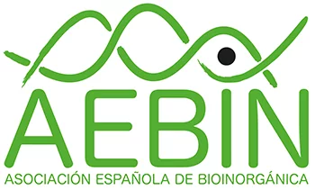
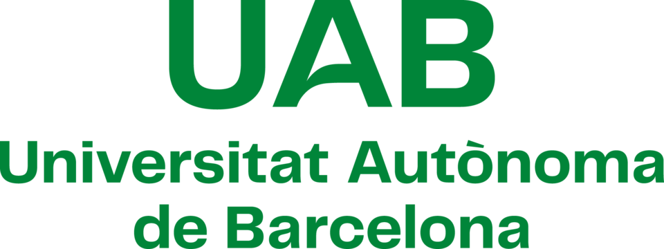

October 1–2, 2026 — UAB, Barcelona
This bilateral meeting will bring together researchers from France and Spain working in bioinorganic chemistry to exchange recent scientific advances and foster new collaborations.
The venue is limited to 15 research groups from each of the Frenchbic and AEBIN communities. The organization has been optimized for up to 2 participants and two oral presentations per group. Organizational constraints do not allow for an increase in any of these numbers.
The two presentation windows consist of:
The organizers highlight the importance of brevity and efficient use of allotted time. Presenters are encouraged to be concise, as timings will be strictly followed to maximize networking opportunities.
The meeting will take place at the Hotel Exe Campus, located within the campus of the Universitat Autònoma de Barcelona (UAB) in the outskirts of Barcelona. UAB is one of Spain’s leading research universities, known for its scientific quality and international outlook. The campus offers a pleasant, green, and well-connected setting, providing an ideal atmosphere for focused scientific exchanges and informal interactions.
Participants are encouraged to stay for at least two nights, though longer stays should be feasible with the hotel. Early October offers a pleasant time to enjoy the Catalan climate and visit Barcelona, but it is also a busy period with many events and higher hotel prices. The Exe Campus is a good choice for those looking to maximize their venue and the weekend following the event.The Hotel Exe Campus is located within the UAB campus, in a quiet and green environment. It offers a bar and cafeteria, providing convenient spaces for informal discussions and networking.
A digital book of abstracts (PDF) will be provided. No printed materials or conference items will be distributed in order to keep registration fees to a minimum. We kept the information to the simplest and most abstract provided in the registration web page (300 words), which is the only required. The prototypical format suggested is a one paragraph description, 5 keywords and a link to the webpage of the presenter and/or group.
The Registration fee are 150 € and include lunches and coffee breaks: provided at Hotel Campus and conference dinner at a venue in Barcelona. Please follow this link to register: REGISTER HERE
Hotel reservation: use the code AEBINFRBIC for the full discount available for the participants This code is active until June, 30 2026. Be aware that with this discount, the price for individual rooms is 99,00 € /night and twin ones 109,00 €/night. Breakfast is included as well as VAT. Touristic taxes are not (generally very few euros). Total refund is only available until 30 days before the day of check in. No refund passed this date.

